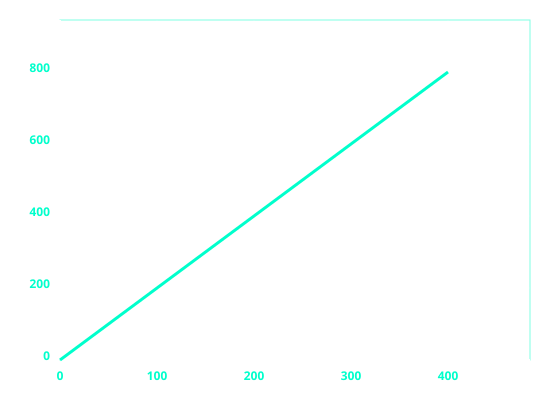
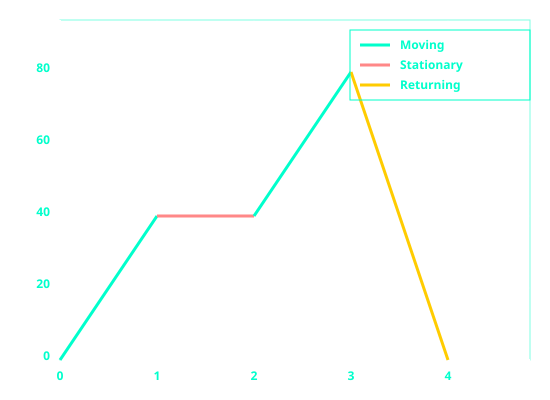
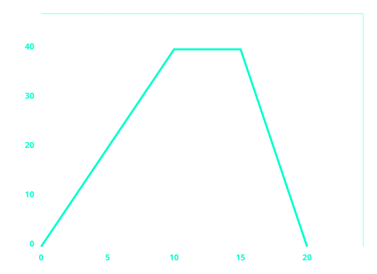

Rates of Change
A rate is a comparison of two quantities that have different units. It tells us how one quantity changes in relation to another. For example, speed is a rate that compares distance to time (kilometres per hour).
Before You Begin: Make sure you have reviewed our Ratios and Percentages page. Rates are closely related to ratios. A ratio compares two quantities with the same units (e.g., boys to girls), while a rate compares two quantities with different units (e.g., kilometres per hour).
Direct Proportion
When two quantities are in direct proportion, they increase or decrease at the same rate. If one quantity doubles, the other doubles. If one quantity halves, the other halves. The ratio between the two quantities stays constant.
Examples of direct proportion:
- The more hours you work, the more money you earn (at a fixed hourly rate).
- The more packets of sweets you buy, the more you pay (at a fixed price per packet).
- The longer the distance you travel, the more time it takes (at a fixed speed).
Direct Proportion Formula
y = k × x
Where:
- y and x are the two quantities
- k is the constant of proportionality (the rate)
Example 1: Direct Proportion (Cost of Items)
If 5 packets of sweets cost M30, how much will 8 packets cost?
Step 1: Find the cost of one packet (the rate).
Cost per packet = M30 ÷ 5 = M6 per packet
Step 2: Multiply by the number of packets.
Cost of 8 packets = 8 × M6 = M48
Answer: 8 packets cost M48.
Example 2: Direct Proportion (Distance and Time)
A car travels at a constant speed. It covers 120 km in 2 hours. How far will it travel in 5 hours?
Step 1: Find the speed (the rate).
Speed = 120 km ÷ 2 hours = 60 km/h
Step 2: Multiply by the new time.
Distance = 60 km/h × 5 hours = 300 km
Answer: The car will travel 300 km in 5 hours.
Key Rule: In direct proportion, the ratio y : x is constant. As one quantity increases, the other increases by the same factor.
Inverse Proportion
When two quantities are in inverse proportion, one quantity increases while the other decreases at the same rate. If one quantity doubles, the other halves. The product of the two quantities stays constant.
Examples of inverse proportion:
- The more workers you have, the less time it takes to complete a job.
- The faster you drive, the less time it takes to reach your destination.
- The more people sharing a pizza, the smaller each person's slice.
Inverse Proportion Formula
y = k ÷ x
Where:
- y and x are the two quantities
- k is the constant of proportionality
Example 3: Inverse Proportion (Work and Time)
It takes 4 workers 6 hours to paint a house. How long will it take 8 workers?
Step 1: Find the total work in worker-hours (the constant).
Total work = 4 workers × 6 hours = 24 worker-hours
Step 2: Divide by the new number of workers.
Time with 8 workers = 24 ÷ 8 = 3 hours
Answer: It will take 8 workers 3 hours.
Example 4: Inverse Proportion (Speed and Time)
A car travels a fixed distance. At 60 km/h, the journey takes 4 hours. How long will it take at 80 km/h?
Step 1: Find the total distance (the constant).
Distance = Speed × Time = 60 km/h × 4 hours = 240 km
Step 2: Divide by the new speed.
Time = 240 km ÷ 80 km/h = 3 hours
Answer: The journey will take 3 hours at 80 km/h.
Key Rule: In inverse proportion, the product y × x is constant. As one quantity increases, the other decreases by the same factor.
Scales and Maps
A scale is a special type of ratio that compares a distance on a map to the actual distance on the ground. Scales are written in the form 1 : n, meaning 1 unit on the map represents n units in real life.
Example 5: Using a Map Scale
A map has a scale of 1 : 50,000. The distance between two towns on the map is 8 cm. What is the actual distance in kilometres?
Step 1: Understand the scale.
Scale 1 : 50,000 means 1 cm on the map = 50,000 cm in real life
Step 2: Multiply the map distance by the scale factor.
Actual distance in cm = 8 × 50,000 = 400,000 cm
Step 3: Convert to kilometres.
400,000 cm ÷ 100,000 = 4 km
Answer: The actual distance is 4 km.
Example 6: Finding the Scale
The actual distance between two villages is 15 km. On a map, they are 5 cm apart. Find the scale of the map.
Step 1: Convert both distances to the same unit.
15 km = 15 × 100,000 = 1,500,000 cm
Step 2: Write the ratio of map distance to actual distance.
Scale = 5 : 1,500,000
Step 3: Simplify by dividing both sides by 5.
Scale = 1 : 300,000
Answer: The scale of the map is 1 : 300,000.
Speed as a Rate
Speed is a rate that compares distance traveled to time taken. It tells us how fast an object is moving. The formula for speed is:
Speed = Distance ÷ Time
Example 7: Calculating Speed
A car travels 240 kilometres in 3 hours. What is its average speed?
Step 1: Identify the quantities.
Distance = 240 km
Time = 3 hours
Step 2: Apply the speed formula.
Speed = 240 km ÷ 3 hours = 80 km/h
Answer: The car's average speed is 80 km/h.
Related Formulas:
Distance = Speed × Time
Time = Distance ÷ Speed
Interest Rates
An interest rate is a percentage rate that tells you how much money you earn on savings or pay on a loan over time. Interest rates are usually given as a percentage per year, for example 5% per year.
Understanding interest rates helps you compare different financial products like bank accounts, loans, and investments. A higher interest rate means more money earned on savings, but also more money paid on loans.
Example 8: Calculating Simple Interest Rate
M2000 is invested for 3 years and earns M300 in simple interest. What is the annual interest rate?
Step 1: Recall the simple interest formula.
I = P × r × t
Step 2: Substitute the known values.
300 = 2000 × r × 3
Step 3: Solve for r.
300 = 6000 × r
r = 300 ÷ 6000 = 0.05
Step 4: Convert to a percentage.
r = 0.05 × 100% = 5%
Answer: The annual interest rate is 5%.
Example 9: Comparing Interest Rates
Bank A offers 6% simple interest per year. Bank B offers 5.5% compound interest per year. Which bank gives more interest on M1000 after 3 years?
Step 1: Calculate Bank A (simple interest).
I = 1000 × 0.06 × 3 = M180
Total = M1180
Step 2: Calculate Bank B (compound interest).
A = 1000 × (1.055)3
A = 1000 × 1.174241 = M1174.24
Answer: Bank A gives M1180, which is more than Bank B's M1174.24.
Cost and Consumption Graphs
Cost and consumption graphs show the relationship between the quantity of an item purchased (consumption) and the total cost. These graphs are usually straight lines because the cost per unit is constant (direct proportion).

Example 10: Interpreting a Cost Graph
The graph above shows the cost of fuel at M2 per litre.
Question: How much will 250 litres cost?
Step 1: Read from the graph. At 200 litres, cost is M400. At 300 litres, cost is M600.
Step 2: 250 litres is halfway between 200 and 300 litres, so cost is halfway between M400 and M600.
Answer: 250 litres cost M500.
Distance Time Graphs
A distance time graph shows how distance changes over time. The gradient (slope) of a distance time graph represents speed.
Key points for distance time graphs:
- A horizontal line means the object is stationary (not moving).
- A straight sloping line means constant speed.
- A steeper slope means a higher speed.
- A downward slope means returning to the start.

Example 11: Interpreting a Distance Time Graph
The graph shows the journey of a car.
Step 1: Calculate the speed for each segment using the formula Speed = Distance ÷ Time.
Segment A (0 to 1 hour): 40 km ÷ 1 hour = 40 km/h
Segment B (1 to 2 hours): 0 km ÷ 1 hour = 0 km/h (stationary)
Segment C (2 to 3 hours): 40 km ÷ 1 hour = 40 km/h
Segment D (3 to 4 hours): 80 km ÷ 1 hour = 80 km/h (return journey)
Answer: The car travelled at 40 km/h, stopped for 1 hour, continued at 40 km/h, then returned at 80 km/h.
Key Rule: The gradient of a distance time graph equals speed. A steeper gradient means higher speed. A horizontal line means stationary.
Speed Time Graphs
A speed time graph shows how speed changes over time. The gradient (slope) of a speed time graph represents acceleration.
Key points for speed time graphs:
- A horizontal line means constant speed (zero acceleration).
- A straight sloping line means constant acceleration or deceleration.
- A positive slope means speeding up (acceleration).
- A negative slope means slowing down (deceleration or retardation).

Example 12: Interpreting a Speed Time Graph
The graph shows the motion of a car.
Step 1: Calculate acceleration using the formula Acceleration = Change in speed ÷ Time.
Segment A (0 to 10 seconds): speed changes from 0 to 40 m/s
Acceleration = (40 - 0) ÷ 10 = 40 ÷ 10 = 4 m/s²
Step 2: Segment B (10 to 15 seconds): speed is constant at 40 m/s.
Acceleration = 0 m/s² (constant speed)
Step 3: Segment C (15 to 20 seconds): speed changes from 40 to 0 m/s.
Deceleration = (0 - 40) ÷ 5 = -40 ÷ 5 = -8 m/s² (negative means slowing down)
Answer: The car accelerated at 4 m/s², travelled at constant speed for 5 seconds, then decelerated at 8 m/s².
Key Rule: The gradient of a speed time graph equals acceleration. A positive gradient means speeding up. A negative gradient means slowing down.
Area Under Speed Time Graphs
The area under a speed time graph represents the distance travelled. This is because Distance = Speed × Time, and multiplying speed by time on a graph gives the area of the shapes underneath the line.
Common shapes under speed time graphs:
- Rectangle: Area = length × width = speed × time
- Triangle: Area = ½ × base × height = ½ × time × change in speed
- Trapezium: Area = ½ × (a + b) × height
Example 13: Finding Distance from Speed Time Graph
Using the speed time graph from Example 12, calculate the total distance travelled.
Step 1: Find the area of each segment.
Segment A (Triangle): ½ × base × height = ½ × 10 s × 40 m/s = 200 m
Segment B (Rectangle): length × width = 5 s × 40 m/s = 200 m
Segment C (Triangle): ½ × base × height = ½ × 5 s × 40 m/s = 100 m
Step 2: Add the areas together.
Total distance = 200 m + 200 m + 100 m = 500 m
Answer: The car travelled a total distance of 500 metres.
Key Rule: Area under a speed time graph equals distance travelled. Split the graph into triangles and rectangles to find the area.
Example 14: Area Under a Cost Graph
The area under a cost graph can represent total cost when the graph shows cost per unit over quantity.
For a constant rate of M2 per litre, the area from 0 to 250 litres is:
Area = length × width = 250 litres × M2 = M500 (total cost)
Solving Rate Problems
Many real-life problems involve rates. The key steps are:
- Identify the rate given in the problem.
- Determine whether the quantities are directly or inversely proportional.
- Use the correct formula or method to find the unknown value.
- Check your units and convert if necessary.
Example 15: Mixed Rate Problem
Water flows from a tap at a rate of 12 litres per minute. How many litres will flow in 15 minutes? How long will it take to fill a 300 litre tank?
Part A: Find volume after 15 minutes.
Volume = Flow rate × Time = 12 L/min × 15 min = 180 litres
Part B: Find time to fill 300 litres.
Time = Volume ÷ Flow rate = 300 L ÷ 12 L/min = 25 minutes
Answer: 180 litres will flow in 15 minutes. It will take 25 minutes to fill 300 litres.
Summary Table: Rates and Graphs
| Graph Type | X Axis | Y Axis | Gradient Represents | Area Represents |
|---|---|---|---|---|
| Distance Time | Time | Distance | Speed | Not usually used |
| Speed Time | Time | Speed | Acceleration | Distance |
| Cost Consumption | Quantity | Cost | Cost per unit | Total cost |
Key Takeaways:
• Direct proportion: both quantities increase together. The ratio stays constant.
• Inverse proportion: one quantity increases while the other decreases. The product stays constant.
• A scale is a ratio that compares map distance to actual distance.
• Speed = Distance ÷ Time. Gradient of distance time graph = speed.
• Acceleration = Change in speed ÷ Time. Gradient of speed time graph = acceleration.
• Area under a speed time graph = distance travelled.
• Always check your units and convert when necessary.
NB: Rates are everywhere in real life. Understanding direct and inverse proportion, distance time graphs, and speed time graphs will help you solve many practical problems. The gradient of a graph tells you how quickly something is changing, and the area under a graph tells you the total amount accumulated.